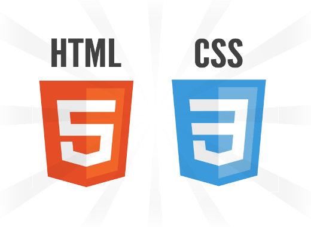

Qu'est ce que Internet?
Internet est un réseau entre les réseaux, littéralement.
Inter: entre /\ net: réseau
Ceci est un réseau.
Un réseau informatique est un ensemble d'équipements reliés entre eux pour échanger des informations.
Voici plusieurs réseau.
Voici plusieurs réseau reliée par internet.
Qu'est ce qu'un site web?
Un site web c'est un paquet plein d'informations contenus dans un serveur.
Quand vous faite une recherche sur Google, ou n'importe quelle autre moteur de recherche, ce dernier envoie les mot-clé de votre recherche au serveurs qui composent internet et ceux-ci lui renvoie une liste des site web comportant par exemple le plus de fois les mots grenouille verte par exemple.
Quelle sont les languages pour fabriquer un site web?
Les languages utilisé pour faire un ste web sont le HTML 5 et le CSS 3
Pour fabriquer un site web le mieux est d'apprendre ces deux languages car les logiciels comme WordPresse ou encore Wix soit ils générent un mauvais code soit ils mettent de la pub dans votre site, ou pire, les deux!
"Inventé par Tim Berners-Lee et Robert Cailliau à la fin des années 1980, le Web se résume à cet outil qui permet la consultation, via un navigateur, de pages de sites Web. Il ne représente qu'une partie de ce que comporte réellement Internet avec, notamment, les applications de courrier électronique et le partage de fichiers en P2P, entre autres." recupéré sur https://www.journaldunet.fr/web-tech/dictionnaire-du-webmastering/1203593-web-definition/